Urban Sketcherzy z Polski i Europy, łączmy się po raz kolejny! Zapraszamy na trzeci Festiwal Miejskiego Szkicowania w Świdnicy - od 15 do 18 sierpnia 2024 to piękne miasto na Dolnym Śląsku wypełni się miłośnikami rysowania w terenie. Rysunkowe spotkania wśród zabytków, plenerowe warsztaty, wystawy, prelekcje, targi materiałów plastycznych to tylko niektóre atrakcje, będzie też okazja poznać ciekawych ludzi i dołączyć do międzynarodowej społeczności podziwiającej świat ze szkicownikiem w ręku.
Więcej informacji w najbliższych miesiącach będziemy udostępniać na stronie naszego Festiwalu na Facebooku: Urban Sketching Festival Świdnica
Opis zeszłorocznego Festiwalu Miejskiego Szkicowania 2023 znajdziecie pod tym linkiem: USk Festiwal 2023
Cena festiwalowej wejściówki(zapewniającej identyfikator oraz goodie bag do odbioru osobistego w trakcie Festiwalu) to 50zł a pojedynczych warsztatów to 100zł.
W tym roku każdy prowadzący warsztaty poprowadzi również prezentację lub demo. Wstęp na prezentacje i dema jest darmowy dla wszystkich uczestników Festiwalu.
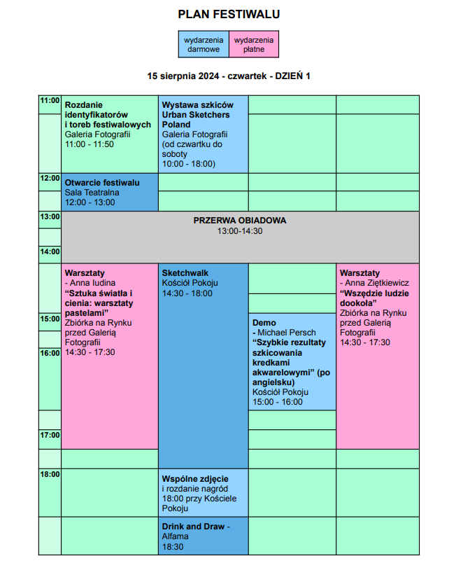
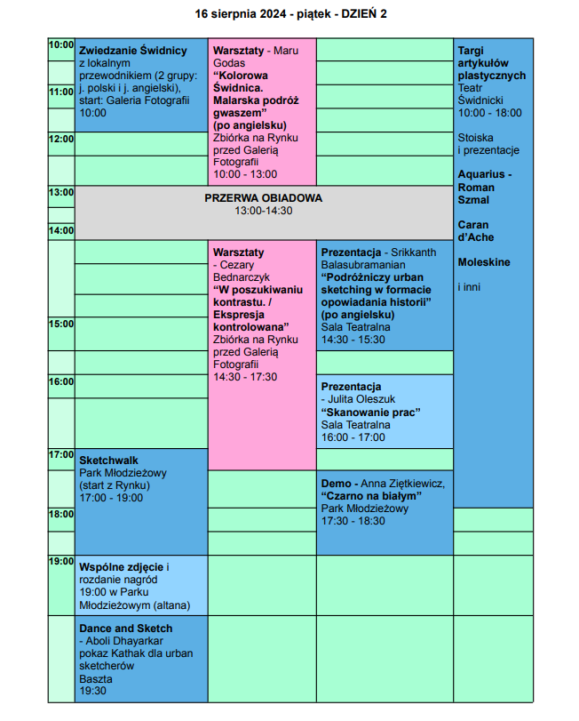
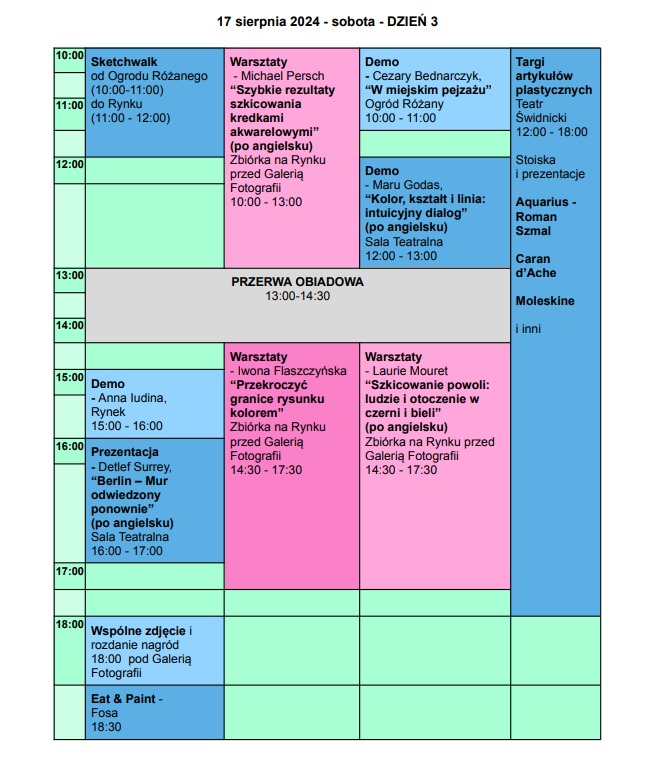
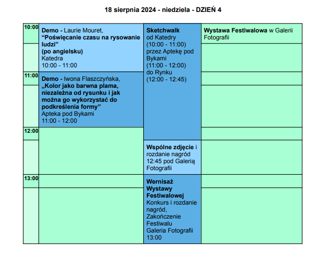
Julita Oleszuk - Skanowanie prac
Prezentacja o wszystkich podstawowych kwestiach w temacie skanowania prac, przygotowania do druku oraz doborze materiałów, aby kolor był jak najwierniej odwzorowany.
Jak i gdzie wykonać skany i druki? Jakich parametrów używać? Na co uważać? Jak zapanować nad kolorem? Co może pójść nie tak?
Odpowiedzi na pytania jak i wiele innych kwestii poznacie i nauczycie się podczas prezentacji.
Dla kogo? Dla każdego rysownika!
Bo prędzej czy później przychodzi czas na wystawę prac, cyfrowe uwiecznienie rysunków czy też sprzedaż wydruków.
Wstęp wolny.
O prowadzącym
Julita Oleszuk - szeroko kreatywna projektantka graficzna. O wydruku i skanie artystycznym może rozmawiać godzinami, a swoje doświadczenie zdobyła w pracy digitalizując prace wielu artystów polskich.
Na codzień jest jedną z prowadzących USK Warsaw.
Instagram: ivy_foxes
Srikkanth Balasubramanian - Podróżniczy, opowiadający historię urban sketching
Każdy szkic może opowiedzieć historię, i co więcej - każdy urban sketcher ma swoją własną historię do opowiedzenia.
Ta prezentacja będzie historią mikrobiologa, który odnalazł pasję w urban sketchingu.
Wstęp wolny. Prezentacja w języku angielskim.
O prowadzącym
Srikkanth Balasubramaniano - pochodzi z Tiruchirappalli, z południowych Indii. Mieszka w Delft (Niderlandy) od 2019 roku. Mikrobiolog w ciągu tygodnia, urban sketcher w weekendy.
Srikkanth kocha szczególnie szkicowanie na różnych przedmiotach - liściach, kubkach, kamieniach, korkach od wina, etykietach po kombuchy i innych.
Jest aktywnym członkiem Urban Sketchers Nederland.
Instagram: srikkanthsketches
Detlef Surrey - Berlin: Mur odwiedzony ponownie
"Gdzie był Mur?" - to pytanie wielu turystów zadawało Detlefowi, gdy spotykali go szkicującego w różnych miejsach Berlina.
Właśnie, GDZIE on był?
To pytanie zaciekawiło Detlefa i zmotywowało do odwiedzenia ze szkicownikiem miejsc, w których stał Mur Berliński.
Dzięki tej ciekawości powstał szkicownik pełen reportażowych szkiców dokumentujących współczesny świat z historią w tle. Fascynujący aspekt bycia urban sketcherem!
Wstęp wolny. Prezentacja w języku angielskim.
O prowadzącym
Detlef Surrey - członek Urban Sketchers Berlin, ilustrator i rysownik. Do Berlina przybył w 1975 roku, aby studiować nauki polityczne. Wtedy zaczął też tworzyć komiksy i ukończył studia artystyczne. 9 listopada 1989 roku Detlef był świadkiem upadku Muru Berlińskiego w Checkpoint Charlie.
Instagram: surrey_sketches
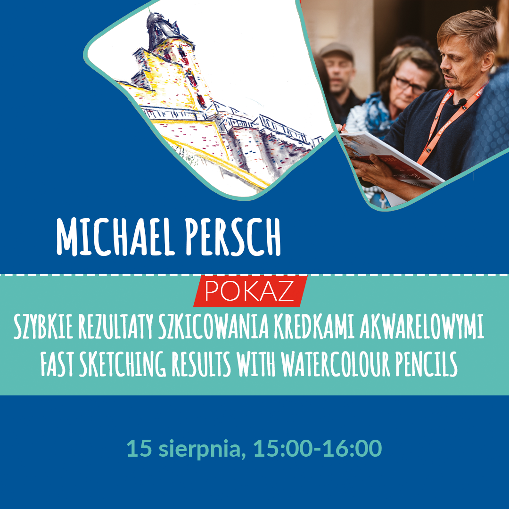
Michael Persch - Szybkie rezultaty szkicowania kredkami akwarelowymi
Podczas dema Michael zaprezentuje techniki podobne do tych, które będą poruszane podczas warsztatów - kredki akwarelowe. Podczas demo praca powstanie od razu na dużym formacie, z pominięciem tworzenia serii małych rysunków.
Wstęp wolny. Demo w języku angielskim.
O prowadzącym
Michael Persch - niemiecki architekt, artysta i urban sketcher mieszkający w Plauen po wieloletnim pobycie za granicą. Z grupą związany jest od 2015 roku, kiedy to przypadkiem dowiedział się o grupie Urban Sketchers Singapore.
Michael aktualnie wykorzystuje trzy techniki szkicowania: pióro wieczne w połaczeniu z akwarelą, tusz malowany bambusowym kijkiem oraz kredki akwarelowe.
Instagram: persch.michael
Anna Ziętkiewicz - Czarno na białym
Mamy zazwyczaj mnóstwo farb, kredek, pisakow, możemy użyć wielu kolorów, mieszać techniki, czasem nad tym bogactwem panujemy, a czasami nadmiar możliwości nas przytłacza.
A gdyby tak spróbować tylko czarno na białym?
Spróbuję! Może się okaże, że to wcale nie ogranicza.
Wstęp wolny.
O prowadzącym
Anna Ziętkiewicz - Jest fanką urban sketchingu i robi to od bardzo dawna, zanim jeszcze wiedziała o istnieniu grupy. Od lat aktywna członkini Urban Sketchers Poland. Bardzo lubi szkicować ludzi.
Instagram: martwawiewiorka
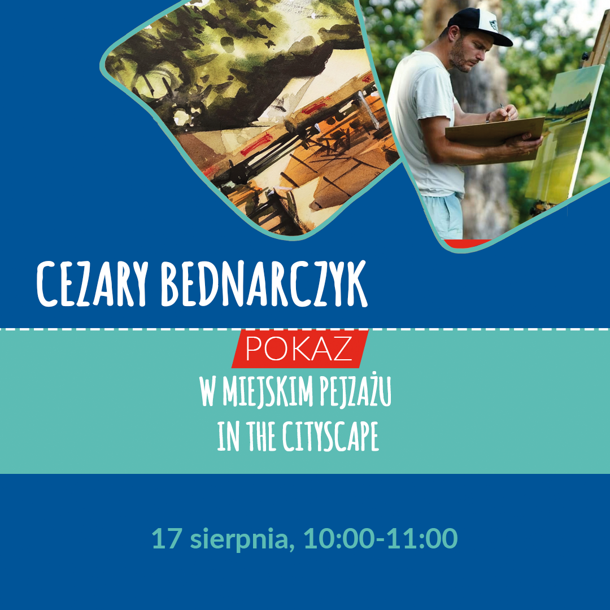
Cezary Bednarczyk - W miejskim pejzażu
W trakcie demonstracji akwarelowej uczestnicy poznają warsztat mojej pracy z pejzażem miejskim. Podczas malowania możliwe będzie zadawanie pytań bądź po prostu wymiana zdań na temat malowania akwarelą.
Wstęp wolny.
O prowadzącym
Cezary Bednarczyk - rodowity zielonogórzanin. W lipcu 2015 roku obronił dyplom magisterski z malarstwa na Wydziale Artystycznym Uniwersytetu Zielonogórskiego (pracownia prof. Stanisława R. Kortyki). Zajmuje się głównie malarstwem olejnym i akwarelowym a tematyka jego prac to w szczególności portret i pejzaż. Uczestnik wielu wystaw krajowych oraz zagranicznych, indywidualnych jak i zbiorowych. Jego drugą wielką pasją jest muzyka (perkusista ska/swing/rock’n’rollowej formacji Las Melinas).
Instagram: bednarczykcezary
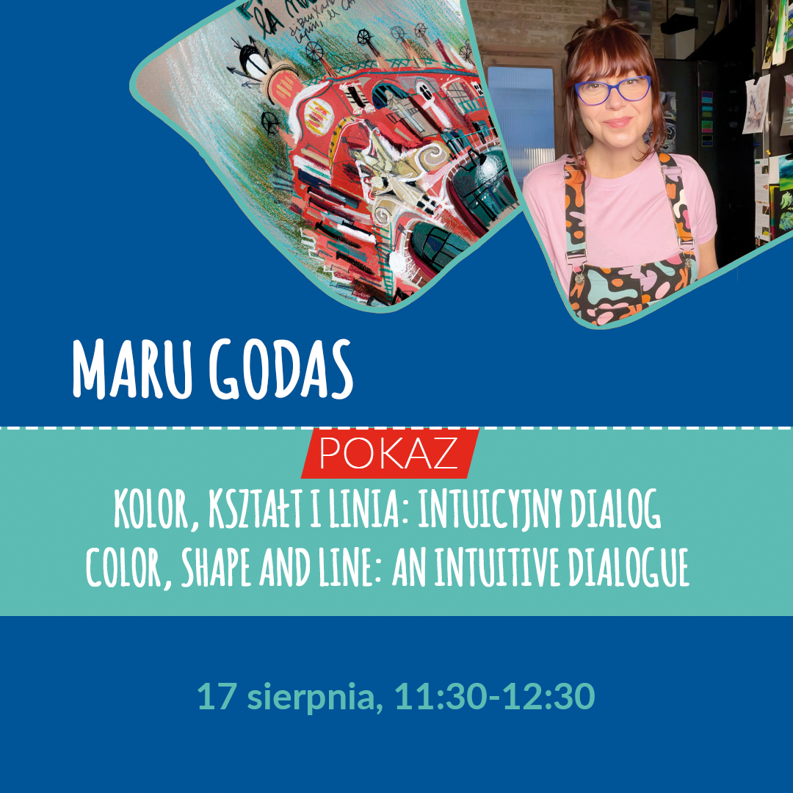
Maru Godas - kolor, kształ i linia: intuicyjny dialog
Demo skupi się na użyciu technik mieszanych na kolorowym papierze oraz wykorzystaniu przestrzeni negatywnych. Nacisk zostanie postawiony na użyciu ograniczonej palety kolorów, pokazane zostanie jak mieszać plamy kolorów z liniami i pociągnięciami pędzla. Podczas dema styl będzie pełen spontaniczności i wolności.
Wstęp wolny. Demo w języku angielskim.
O prowadzącym
Maru Godas - Urodziła się w Barcelonie w 1966 roku. Z wykształcenia grafik, prowadzi własne studio graficzne w swoim mieście oraz jest aktywną członkinią grupy Urban Sketchers. Jej prace znalazły się w publikacjach takich jak National Geographic czy Planeta.
W wolnym czasie Maru tworzy gwaszem i olejami, aktualnie pracuje jako ilustratorka. Ciągle ekspoloruje nowe techniki: atramenty, akwarele, kredki...
Instagram: marugodas
Anna Iudina - Wrażenia Pastelowe: Uchwyć Czar Starego Rynku
Na pokazie zostanie zaprezentowany osobisty podejście do rysowania z natury, metoda szukania kompozycji oraz oddawania światła i atmosfery miejsca.
Krok po kroku zobaczysz metody tworzenia pracy w technice pasteli, różnorodne techniki i narzędzia do nakładania i mieszania kolorów w celu uzyskania wyrazistych efektów.
Wstęp wolny.
O prowadzącym
Anna Iudina - Artystka urodzona w Syberii. Długa graficzna zima oraz krótkie, kolorowe lato zainspirowały ją do tworzenia dzieł pełnych koloru. Jej twórczość jest zróżnicowana, pracuje w przeróżnych technikach graficznych i malarskich. Szkice odgrywają ważną rolę w jej twórczości, a jej ulubionym tematem jest człowiek.
Instagram: aiu_art
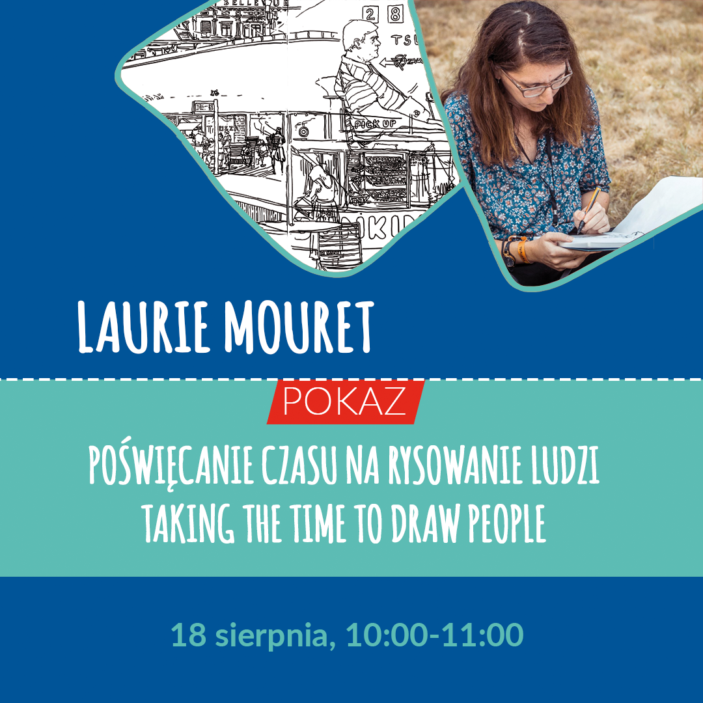
Laurie Mouret - Poświęcanie czasu na rysowanie ludzi
Podczas demo zaprezentowane będzie szkicowanie ludzi. Wyjaśnione zostanie jak szkicować to, co naprawdę widzimy a nie to, co nam się wydaje. Pokazane zostanie jak powoli zbudować szkic i jak ustalić priorytety w procesie tworzenia pracy.
Demo odbędzie się w formie dialogu z uczestnikami, z prezentacją szkicowania.
Wstęp wolny. Demo w języku angielskim.
O prowadzącym
Laurie Mouret - Odkryła urban sketching w 2012 roku i natychmiast pokochała taki rodzaj szkicowania. Samouk, który kocha pracować w czerni i bieli, poświęcając uwagę detalom.
Kocha szkicować ludzi, sceny pełne bałaganu oraz roślinność. Mieszka w Romanii.
Instagram: lau.rie.mrt
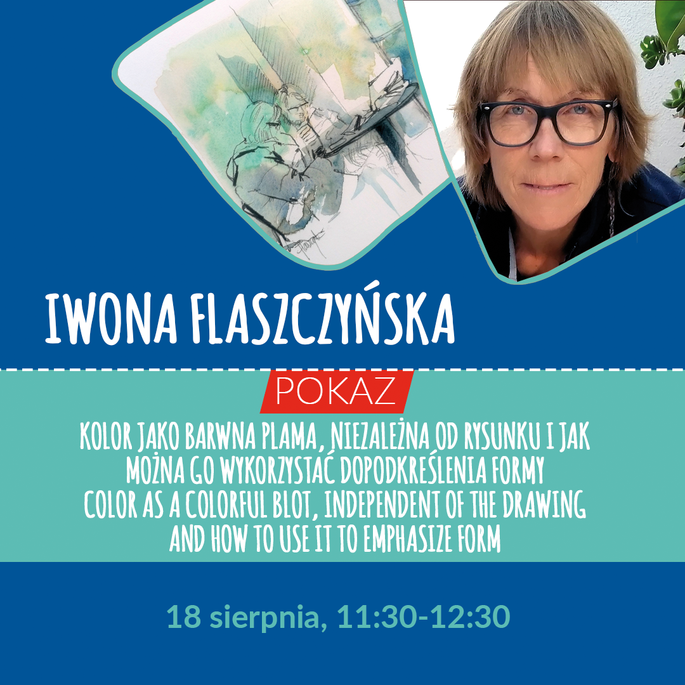
Iwona Flaszczyńska - Kolor jako barwna plama, niezależna od rysunku i jak można go wykorzystać do podkreślenia formy!
Rozwiązanie wybranego i przygotowanego uprzednio tematu, zilustrowane zdjęciami prac i demostracja na żywo, używając techniki akwareli, pitt oil oraz grafitów akwarelowych - watersoluble.
Wstęp wolny.
O prowadzącym
Iwona Flaszczyńska - ukończyła ASP w Warszawie. Otrzymała stypendium do Meksyku, gdzie ostatecznie mieszkała 4 lata, pracując przy ważnych projektach w konserwacji.
Od 1990 roku mieszka w Hiszpanii, gdzie zajmuje się nauczaniem i twórczością własną. Podróżowała wiele, głównie po krajach Ameryki Łacińskiej. Ma na swoim koncie wiele wystaw indywidualnych i zbiorowych w Meksyku i Hiszpanii.
Od 2010 roku bierze aktywny udział w ruchu Urban Sketchers Barcelona. Uwielbia podróże, poznawanie innych kultur, góry i górskie marsze, plaże a przede wszystkim… rysowanie, które nieprzerwanie wyzwala w niej wielkie emocje!
Instagram: iwonaflaszczynska
Na każdych zajęciach obowiązuje limit uczestników. Koszt pojedynczych warsztatów to 100 zł. Można zapisać się na dowolną liczbę warsztatów. UWAGA - niektóre zajęcia nakładają się na siebie, prosimy sprawdzić grafik przed zapisaniem się!
O warsztacie
“Sztuka światła i cienia: warsztaty pastelami”
Podczas warsztatów nauczymy się jak uchwycić grę światła i cienia pastelami, odnajdziemy scenę w otoczeniu parkowym oraz wypróbujemy różne techniki rysowania pastelami.
O prowadzącym
Anna Iudina Artystka urodzona w Syberii. Długa graficzna zima oraz krótkie, kolorowe lato zainspirowały ją do tworzenia dzieł pełnych koloru. Jej twórczość jest zróżnicowana, pracuje w przeróżnych technikach graficznych i malarskich. Szkice odgrywają ważną rolę w jej twórczości, a jej ulubionym tematem jest człowiek.
Instagram: aiu_art
Zapisy od 6 czerwca
O warsztacie
“Wszędzie ludzie dookoła”
Warsztaty szkicowania ludzi w otoczeniu miejskim.
Postaram się przekonać Was, że rysowanie ludzi to świetna sprawa, trening refleksu i kreski, nauka rezygnacji z detali, synteza kształtu. Postaci mogą się przecież przydać na Waszych szkicach, dopowiedzieć jakąś historię czy po prostu ożywić miejskie kadry, zaistnieć na pierwszym, albo na piątym planie.
W ograniczonym czasie warsztatów ciężko opanować błyskawiczne i doskonałe szkicowanie ludzi, ale pokażę kilka przydatnych sposobów, jak ten temat oswoić.
Mam nadzieję, że po prostu będziemy się też dobrze bawić!
O prowadzącym
Anna Ziętkiewicz - Jest fanką urban sketchingu i robi to od bardzo dawna, zanim jeszcze wiedziała o istnieniu grupy. Od lat aktywna członkini Urban Sketchers Poland. Bardzo lubi szkicować ludzi.
Instagram: martwawiewiorka
Zapisy od 6 czerwca
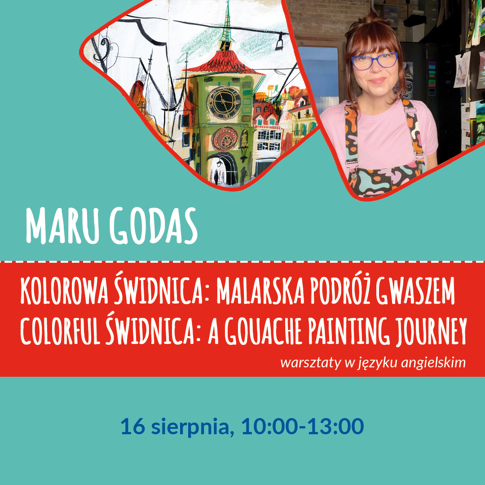
O warsztacie
“Kolorowa Świdnica. Malarska podróż gwaszem”
Warsztat w języku angielskim.
Naucz się tworzyć żywe szkice miejskie przy użyciu technik gwaszu i technik mieszanych.
Gwasz oferuje wyjątkowe matowe i nieprzezroczyste wykończenie, które idealnie nadaje się do scen miejskich, podkreślając
głębię i żywotność swojej grafiki.
Podczas tych warsztatów przyjrzymy się niekonwencjonalnym metodom uzyskania luźnego, wyrazistego i odważnego makijażu
styl artystyczny. Mieszając gwasz z suchymi mediami, takimi jak kredki, kredki i grafit,
przełamiemy tradycyjne standardy artystyczne.
Zaczniemy od eksperymentowania z teksturami i mieszania materiałów, zachęcając do swobodnych pociągnięć i
nieregularne wzory. Te wstępne ćwiczenia pomogą Ci oswoić się z nowymi językami artystycznymi
tętniąca życiem esencja pejzażu miejskiego.
Następnie skupimy się na stworzeniu mini-szkiców detali miejskich. Tutaj użyjemy gwaszu do
tło i integruj kolorowe linie przy użyciu suchych technik. Będziemy pracować ze spontanicznym kolorem
wyborów, podkreślając jednocześnie istotne szczegóły, aby przekazać poczucie syntezy.
W ostatniej części przyjrzymy się technikom kompozycji, deformowaniu perspektyw i łączeniu
różne tekstury, aby stworzyć dynamiczną i płynną reprezentację pejzażu miejskiego.
O prowadzącym
Maru Godas - Urodziła się w Barcelonie w 1966 roku. Z wykształcenia grafik, prowadzi własne studio graficzne w swoim mieście oraz jest aktywną członkinią grupy Urban Sketchers. Jej prace znalazły się w publikacjach takich jak National Geographic czy Planeta.
W wolnym czasie Maru tworzy gwaszem i olejami, aktualnie pracuje jako ilustratorka. Ciągle ekspoloruje nowe techniki: atramenty, akwarele, kredki...
Instagram: marugodas
Zapisy od 6 czerwca
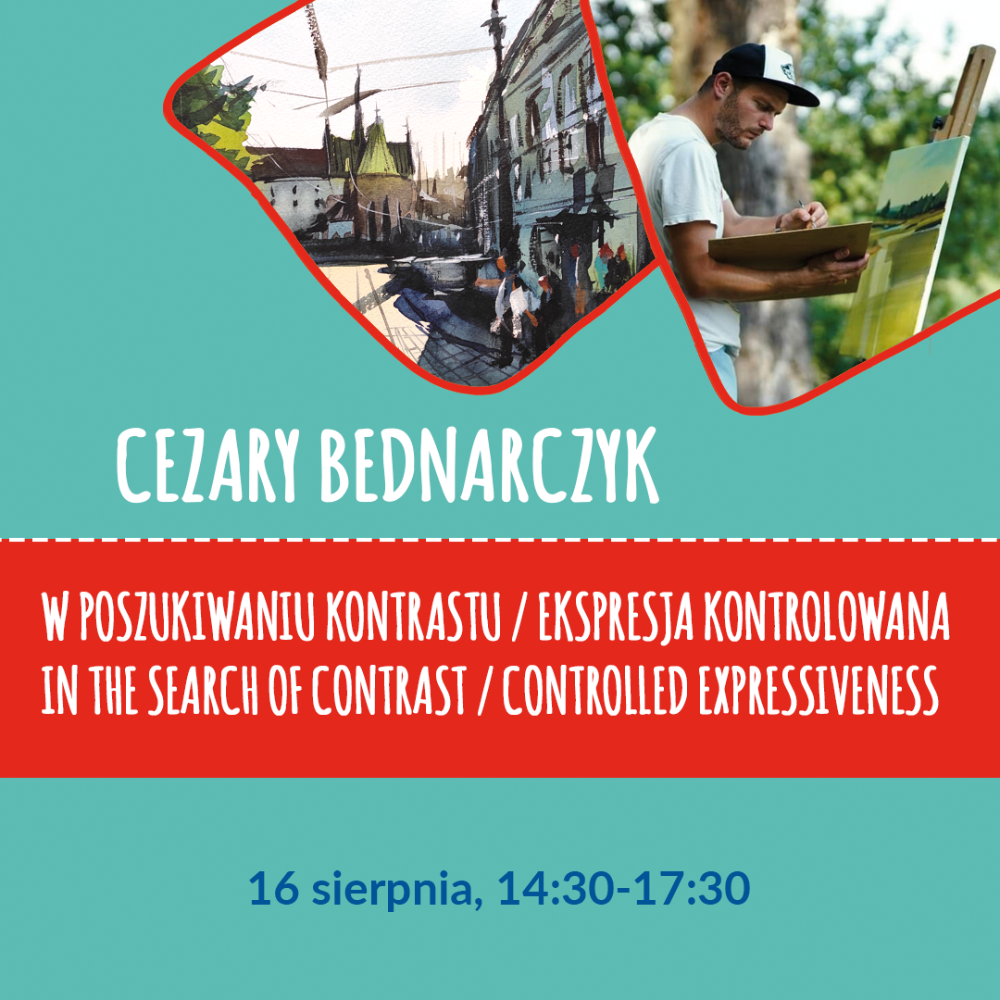
O warsztacie
“W poszukiwaniu kontrastu. / Ekspresja kontrolowana”
Podczas warsztatów uczestnicy poznają sposób, w jaki sam pracuję będąc w plenerze, z jakich materiałów korzystam oraz w jaki sposób staram się uchwycić atmosferę danej lokacji oraz jakich kompromisów należy dokonywać podczas malowania by uniknąć “przemęczenia” pracy.
Uczestnicy dowiedzą się również jak szukać kontrastu oraz jak nim operować, aby zwiększyć siłę wyrazu swojej akwareli.
O prowadzącym
Cezary Bednarczyk - rodowity zielonogórzanin. W lipcu 2015 roku obronił dyplom magisterski z malarstwa na Wydziale Artystycznym Uniwersytetu Zielonogórskiego (pracownia prof. Stanisława R. Kortyki). Zajmuje się głównie malarstwem olejnym i akwarelowym a tematyka jego prac to w szczególności portret i pejzaż. Uczestnik wielu wystaw krajowych oraz zagranicznych, indywidualnych jak i zbiorowych. Jego drugą wielką pasją jest muzyka (perkusista ska/swing/rock’n’rollowej formacji Las Melinas).
Instagram: bednarczykcezary
Zapisy od 6 czerwca
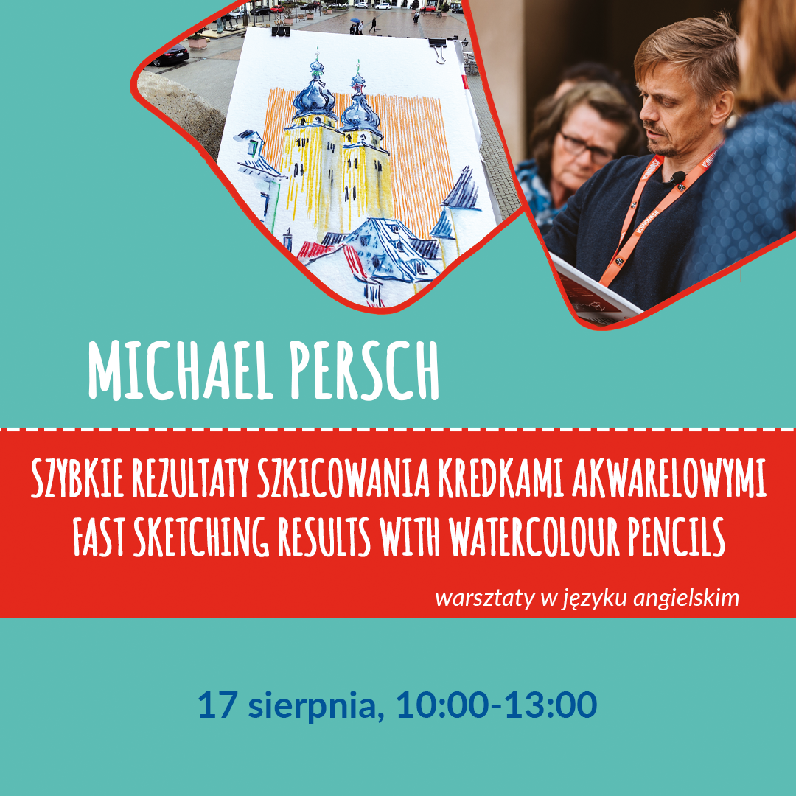
O warsztacie
“Szybkie rezultaty szkicowania kredkami akwarelowymi”
Warsztat w języku angielskim.
Celem warsztatów jest pokazanie uczestnikom, jak szybko uzyskać efekty w szkicowaniu przy użyciu ograniczonej gamy kredek rozpuszczalnych w wodzie, z dodatkiem wody.
Na początku warsztatów zostanie wykonana seria miniaturowych szkiców, aby podjąć decyzję o kompozycji i kadrowaniu, a także o wyborze maksymalnie pięciu kolorów dla rzeczywistego szkicu.
Po wybraniu preferowanej kompozycji zaczynamy od większego arkusza: formatu A3.
Na początku zostaną wytyczone podstawowe kontury przy użyciu najjaśniejszego wybranego koloru.
Następnie zdefiniujemy podstawowe kształty różnych kolorowych obszarów. Same kształty zostaną wypełnione różnymi wzorami - w zależności od wyglądu rzeczywistego obiektu.
Użycie pędzla wodnego zdefiniuje różne kształty i uwydatni wybrane obszary kolorystyczne. Jednocześnie woda służy do definiowania cieni.
W zależności od wyniku po około 45 minutach na większym arkuszu dodamy kilka znaków w mocniejszych kolorach, aby podkreślić specyficzne cechy obiektu - może to być albo zarys osoby, albo znaczący element architektoniczny.
O prowadzącym
Michael Persch - niemiecki architekt, artysta i urban sketcher mieszkający w Plauen po wieloletnim pobycie za granicą. Z grupą związany jest od 2015 roku, kiedy to przypadkiem dowiedział się o grupie Urban Sketchers Singapore.
Michael aktualnie wykorzystuje trzy techniki szkicowania: pióro wieczne w połaczeniu z akwarelą, tusz malowany bambusowym kijkiem oraz kredki akwarelowe.
Instagram: persch.michael
Zapisy od 6 czerwca
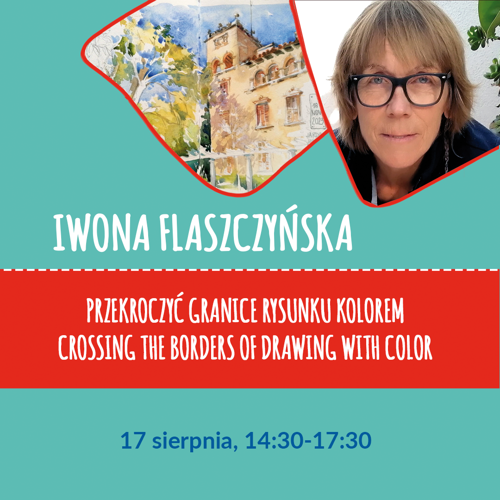
O warsztacie
“Przekroczyć granice rysunku kolorem”
W ciągu 3 godzin warsztatów zrobimy 2 szybkie ćwiczenia
(maks.0, 5 godz.każde) w postaci winiety, niewielkich
rozmiarów, pracując plamą koloru w dwóch wersjach:
1. Uprzednio wykonany szybki szkic, potem luźno położone
plamy koloru wykorzystując zredukowaną paletę (do 3
kolorów) i szukając kontrastów pomiędzy światłem i cieniem.
2. Zaczynamy od plamy koloru i później wprowadzamy kontur,
po czym kończymy szkic aplikując kolor tak, aby osiągnąć
efekt światłocienia.
Rysunek definitywny, 2 godziny:
Rysunek wykonamy w ołówku, pitt oil, micronach, piórkach,
wg gustu, po czym przechodząc do koloru, postaramy się
przekroczyć granice rysunku, aplikując plamy barwne tak, aby
linia nie była przeszkodą ani ograniczeniem. Zamiast
kolorować rysunek postaramy się aby kolor był pełnoprawnym
i niezależnym elementem naszej kompozycji, wychodzącym
poza ramy rysunku.
O prowadzącym
Iwona Flaszczyńska - ukończyła ASP w Warszawie. Otrzymała stypendium do Meksyku, gdzie ostatecznie mieszkała 4 lata, pracując przy ważnych projektach w konserwacji.
Od 1990 roku mieszka w Hiszpanii, gdzie zajmuje się nauczaniem i twórczością własną. Podróżowała wiele, głównie po krajach Ameryki Łacińskiej. Ma na swoim koncie wiele wystaw indywidualnych i zbiorowych w Meksyku i Hiszpanii.
Od 2010 roku bierze aktywny udział w ruchu Urban Sketchers Barcelona. Uwielbia podróże, poznawanie innych kultur, góry i górskie marsze, plaże a przede wszystkim… rysowanie, które nieprzerwanie wyzwala w niej wielkie emocje!
Instagram: iwonaflaszczynska
Zapisy od 6 czerwca
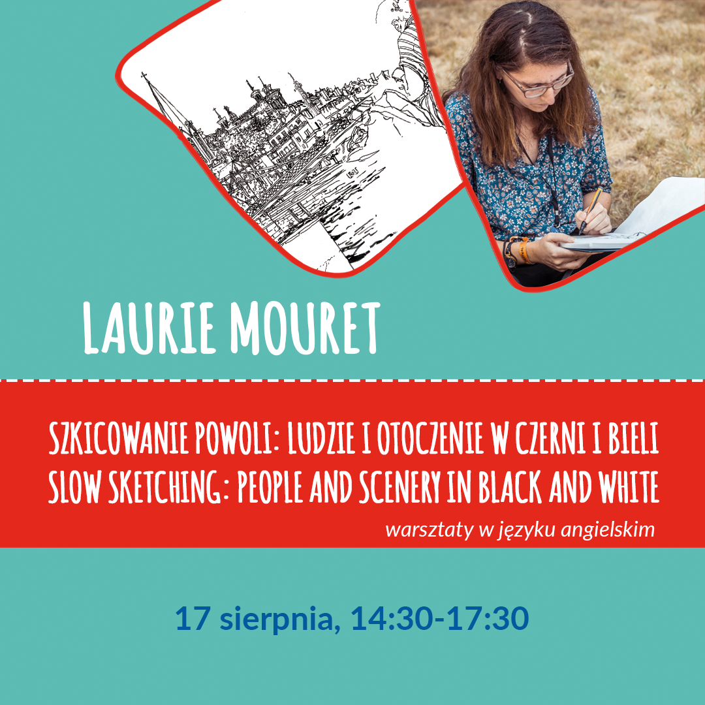
O warsztacie
“Szkicowanie powoli: ludzie i otoczenie w czerni i bieli”
Warsztat w języku angielskim.
Celem będzie posiadanie czystego szkicu od samego początku, co oznacza, że należy dokonać wyborów, aby mieć pewność, że to, co nas interesuje w scenerii, zostanie narysowane podczas warsztatów.
Uczestnicy nauczą się wyobrażać sobie swój szkic jako sumę jego części (w ten sposób godząc się z „błędami”), skupiać się na rysowaniu scenerii, ostrożnie po jednej linii i ustalać priorytety elementów szkicu.
O prowadzącym
O prowadzącym
Laurie Mouret - Odkryła urban sketching w 2012 roku i natychmiast pokochała taki rodzaj szkicowania. Samouk, który kocha pracować w czerni i bieli, poświęcając uwagę detalom.
Kocha szkicować ludzi, sceny pełne bałaganu oraz roślinność. Mieszka w Romanii.
Instagram: lau.rie.mrt
Zapisy od 6 czerwca